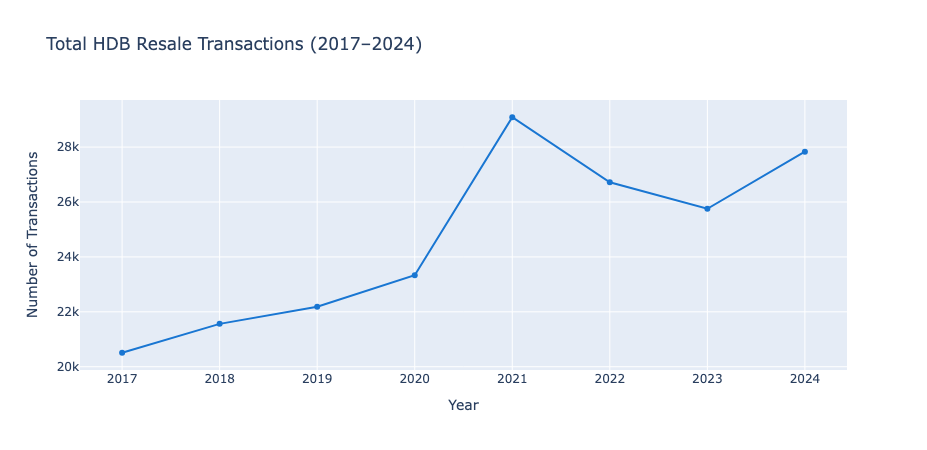
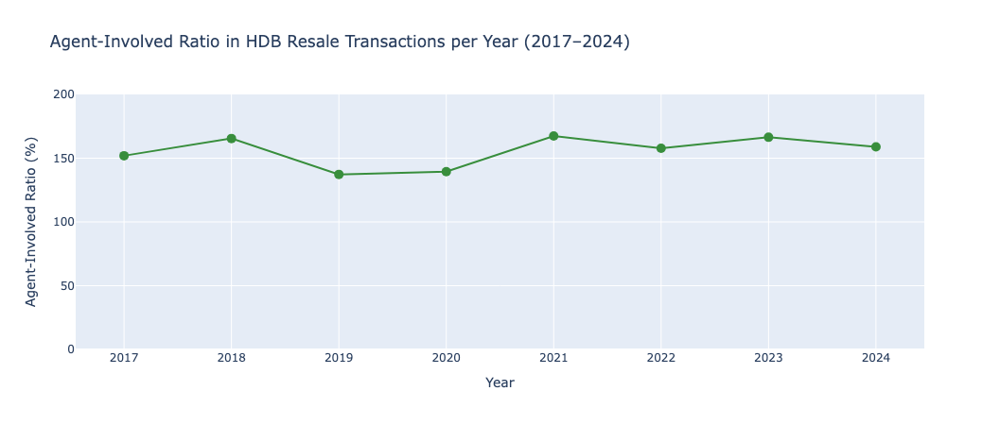
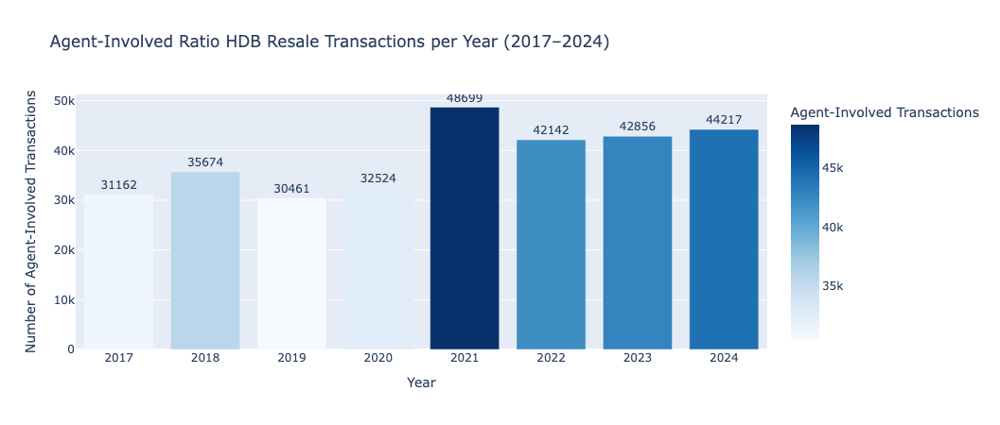
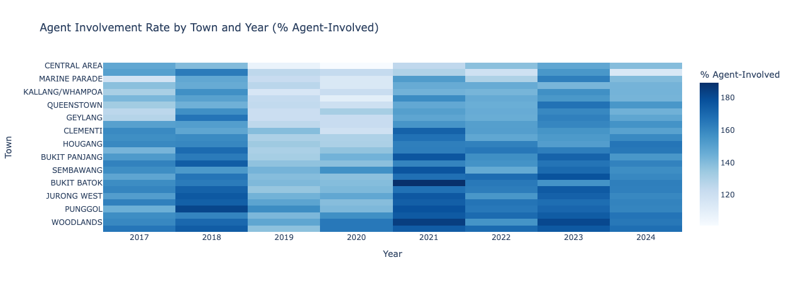
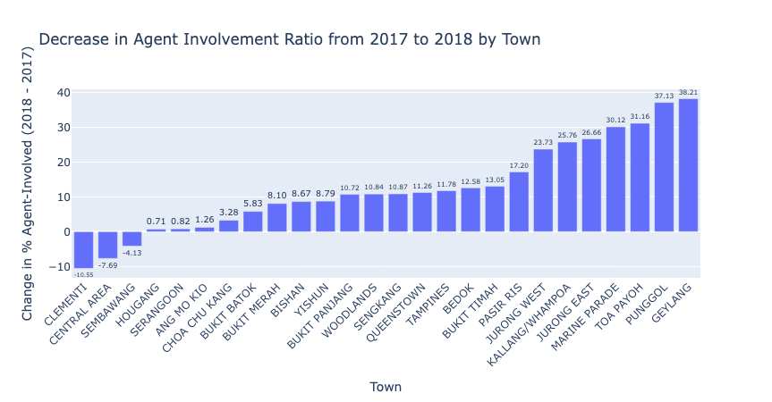

How the HDB Resale Portal Changed the Role of Property Agents
In January 2018, Singapore launched the HDB Resale Portal to streamline the process of buying and selling HDB flats. This digital platform made it easier for buyers and sellers to transact directly, potentially reducing the need for property agents. But what was the real impact on agents' business? Let's explore the data.
1. HDB Resale Transactions: Before and After the Portal

🔍 Insight: The total number of HDB resale transactions fluctuated over the years, but the launch of the portal in 2018 did not cause a dramatic drop in overall market activity.
- Observation: The total number of resale transactions did not drop significantly after the portal launch in 2018.
- Interpretation: The market remained healthy, so any decline in agent activity cannot be attributed to market shrinkage.
- Implication: The portal changed how people transact, not how much they transact.
2. Agent-Involved vs. Direct Transactions


🔍 Insight: The proportion of transactions involving agents has steadily declined since 2018, indicating that more buyers and sellers are comfortable transacting directly in 2019, 2020. And slightly begin to increase from 2021.
Table 2: Agent-Involved vs. Direct Transactions
| Year |
Total HDB Resale Transactions |
Agent-Involved |
% Agent-Involved |
| 2017 | 20509 | 31162 | 151.94% |
| 2018 | 21,561 | 35674 | 165.46% ↑ |
| 2019 | 22186 | 30461 | 137.30% ↓ |
| 2020 | 23333 | 32524 | 139.39% |
| 2021 | 29087 | 48699 | 167.43% ↑ |
| 2022 | 26720 | 42142 | 157.72% |
| 2023 | 25754 | 42856 | 166.41% |
| 2024 | 27833 | 44217 | 158.87% |
🔍 Insight:
- 2019-2020: Clear dip in agent-involved ratios — aligns with early user adoption of the HDB Resale Portal.
- 2021–2023: A rebound in agent-involved ratios — likely due to market rebound post-COVID or agents adapting to new roles (e.g. digital-savvy services).
- >100% ratio means: Multiple agents per resale — shows that co-broking is common.
💡 Interpretation:
- Agents were initially displaced, but adapted to reclaim relevance.
- The market is evolving, not collapsing for agents — just more competitive.
3. Agent-Involved by Town

🔍 Insight:
- The agent-involved ratio is highest in the central areas of Singapore, such as the Central Area, Rest of Central Region, and Rest of North Region.
- Likely due to:
- Higher-value properties
- More complex resale processes
- Foreign buyers or investors who prefer agent support
- 💡 Implication:
- Agent value proposition is strongest in premium and complex segments.
- Suburban and mature estates (e.g., Tampines, Sengkang) likely see more DIY behavior.Agents need to differentiate themselves through:
4. Agent-Involved Compare 2017-2018

🔍 Insight: The agent-involved ratio is highest in the central areas of Singapore, such as the Central Area, Rest of Central Region, and Rest of North Region.
5. Business Implications
🧑💼 For Property Agents
- Changing role: Agents may need to focus on value-added services, such as complex cases or premium marketing, to stay relevant.
- Need for upskilling: Success now hinges on offering:
- Legal guidance
- Market analysis
- Digital transaction support
- Focus on high-touch transactions: Executive flats, multi-generation units, or premium condos still demand agent expertise.
🏢 For HDB / Policymakers
- The portal is empowering consumers, but care must be taken not to overburden inexperienced buyers/sellers.
- Suggest: Tracking user feedback and supporting hybrid agent-portal models.
6. Next Steps: Towards a More Complete Picture
- No unit-level ID:
Can’t deduplicate or trace how many agents are linked to each resale unit.
- Data bias:
Only includes agent-handled transactions — missing full DIY data for comparison.
- Improving robustness: To improve the robustness of the analysis, we propose integrating external datasets:
Table 3: External Datasets
| Dataset |
Source |
Purpose |
| 🏘️ BTO Launch Records | HDB Annual Reports | Estimate how new supply diverts resale demand |
| 📉 Cooling Measures Timeline | URA, MAS | Control for macro-policy impact on prices |
| 👤 DIY vs Agent Share | HDB/Survey Data | Measure true agent displacement |
| 🏢 Agent Registry | CEA Public Register | Track total active agent count over time |
| 📊 Total Resale Volume | HDB Resale Stats | Compare agent vs total market coverage |
| 🦠 Covid-19 Impact | MOH, DOS, CEA, HDB | Analyze disruptions to transaction volume and agent activity due to lockdowns, safe distancing, and market uncertainty |
Conclusion: The data suggests a possible trend: some decline in agent involvement in HDB resale after the Portal’s launch. However, due to the above limitations, we cannot directly attribute this trend to the Portal alone. This analysis is a first step, and future work must combine transactional, regulatory, and behavioral data to more clearly quantify the Portal’s impact on agents and the housing market.